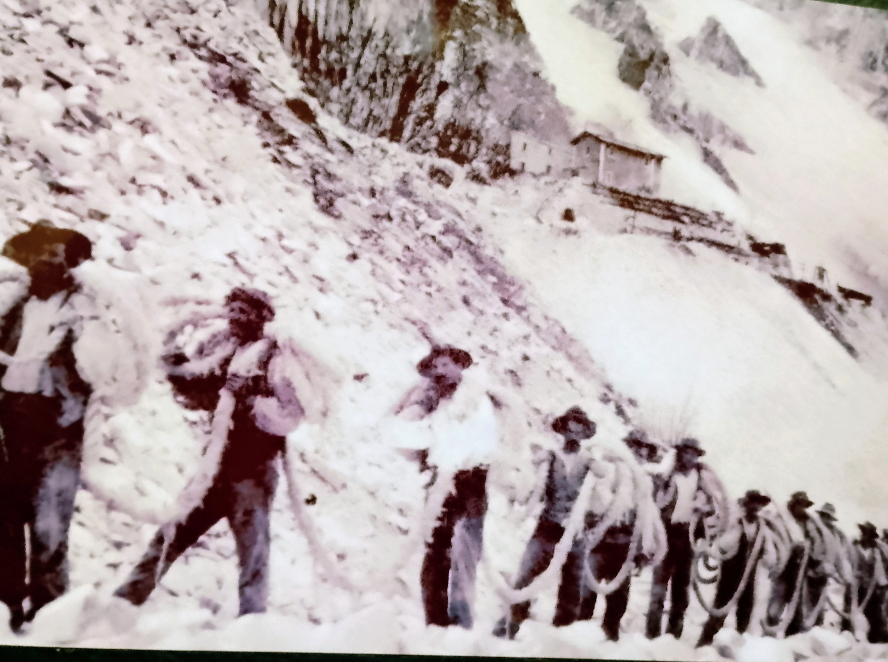
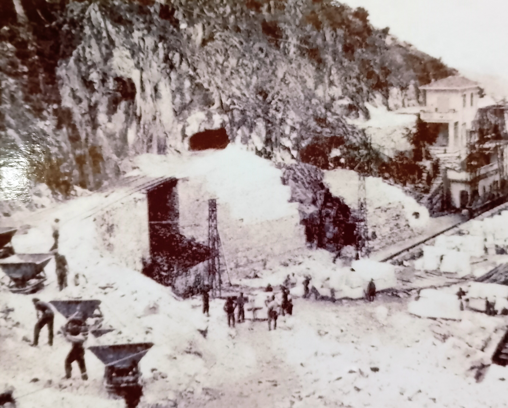
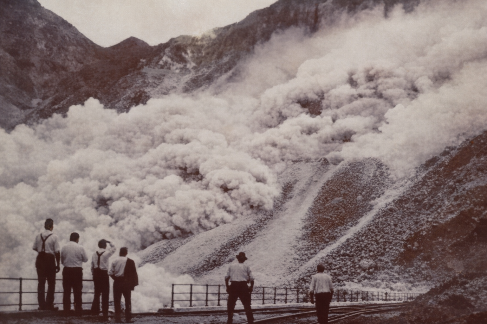

Scena quotidiana dei cavatori impegnati nelle attività di estrazione del marmo.

Questa sezione raccoglie materiali, fotografie, documentazioni e frammenti visivi legati al lavoro curatoriale sulle mini‑sculture in marmo. Ogni elemento è parte di un percorso di catalogazione che unisce metodo, osservazione e storia materiale.

This section gathers materials, photographs, documentation and visual fragments connected to the curatorial work on marble mini‑sculptures. Each element is part of a cataloguing process that combines method, observation and material history.

IT: Documento fotografico preliminare, parte del processo di osservazione e selezione.
EN: Preliminary photographic document, part of the observation and selection process.
IT: Dettaglio materico utilizzato per la catalogazione delle superfici.
EN: Material detail used for surface cataloguing.
IT: Studio fotografico di riferimento per la numerazione progressiva.
EN: Reference photographic study for progressive numbering.